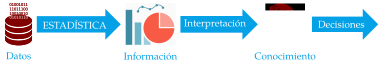
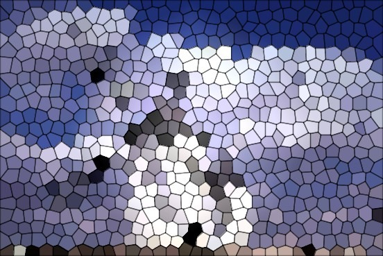
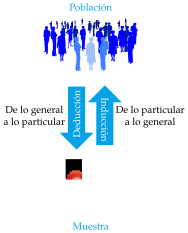
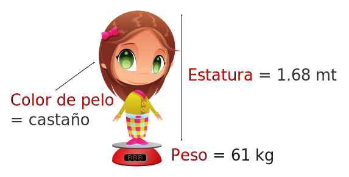
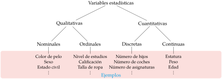
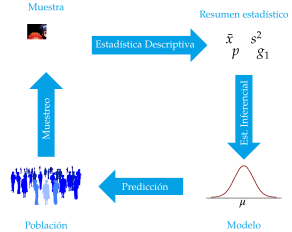

1 Introducción a la Estadística
1.1 La estadística como herramienta científica
1.1.1 ¿Qué es la estadística?
Definición 1.1 (Estadística) La estadística es una rama de las matemáticas que se encarga de la recogida, análisis e interpretación de datos.
El papel de la Estadística es extraer información de los datos para adquirir el conocimiento necesario para tomar decisiones.

La estadística es imprescindible en cualquier disciplina científica o técnica donde se manejen datos, especialmente si son grandes volúmenes de datos, como por ejemplo en Física, Química, Medicina, Psicología, Economía o Ciencias Sociales.
Pero, ¿por qué es necesaria la Estadística?
1.1.2 La variabilidad de nuestro mundo
El científico trata de estudiar el mundo que le rodea; un mundo que está lleno de variaciones que dificultan la determinación del comportamiento de las cosas.
La estadística actúa como disciplina puente entre la realidad del mundo y los modelos matemáticos que tratan de explicarla, proporcionando una metodología para evaluar las discrepancias entre la realidad y los modelos teóricos.
Esto la convierte en una herramienta indispensable en las ciencias aplicadas que requieran el análisis de datos y el diseño de experimentos.
1.2 Población y muestra
1.2.1 Población estadística
Definición 1.2 (Población) Una población es un conjunto de elementos definido por una o más características que tienen todos los elementos, y sólo ellos. Cada elemento de la población se llama individuo.
Definición 1.3 (Tamaño poblacional) El número de individuos de una población se conoce como tamaño poblacional y se representa como \(N\).
Ejemplo 1.1 En unas elecciones generales a la presidencia del gobierno, la población serían todos los individuos del estado con derecho a voto. En el estudio de una enfermedad, la población sería todas las personas que tienen la enfermedad. Y en un proceso de control de calidad en la fabricación de un fármaco, la población estaría formada por todos los fármacos que se producen en la fábrica.
A veces, no todos los elementos de la población están accesibles para su estudio. Entonces se distingue entre:
- Población Teórica: Conjunto de elementos a los que se quiere extrapolar los resultados del estudio.
- Población Estudiada: Conjunto de elementos realmente accesibles en el estudio.
Ejemplo 1.2 En el caso del estudio de una enfermedad, la población teórica sería todas las personas que contraigan la enfermedad, incluso si aún no han nacido, mientras que la población estudiada se limitaría al número de personas enfermas que realmente podemos estudiar (obsérvese que incluso quedarían fuera las personas enfermas pero de las que no podemos conseguir información).
1.2.2 Inconvenientes en el estudio de la población
El científico estudia un determinado fenómeno en una población para comprenderlo, obtener conocimiento sobre el mismo, y así poder controlarlo. Pero, para tener un conocimiento completo de la población es necesario estudiar todos los individuos de la misma. Sin embargo, esto no siempre es posible por distintos motivos:
- El tamaño de la población es infinito, o bien es finito pero demasiado grande.
- Las pruebas a que se someten los individuos son destructivas.
- El coste, tanto de dinero como de tiempo, que supondría estudiar a todos los individuos es excesivo.
1.2.3 Muestra estadística
Cuando no es posible o conveniente estudiar todos los individuos de la población, se estudia sólo una parte de la misma.
Definición 1.4 (Muestra) Una muestra es un subconjunto de la población.
Definición 1.5 (Tamaño muestral) Al número de individuos que componen la muestra se le llama tamaño muestral y se representa por \(n\).
Habitualmente, el estudio de una población se realiza a partir de muestras extraídas de dicha población.
Generalmente, el estudio de la muestra sólo aporta conocimiento aproximado de la población. Pero en muchos casos es suficiente.
1.2.4 Determinación del tamaño muestral
Una de las preguntas más interesantes que surge inmediatamente es: ¿cuántos individuos es necesario tomar en la muestra para tener un conocimiento aproximado pero suficiente de la población?
La respuesta depende de varios factores, como la variabilidad de la población o la fiabilidad deseada para las extrapolaciones que se hagan hacia la población.
Por desgracia no se podrá responder hasta casi el final del curso, pero en general, cuantos más individuos haya en la muestra, más fiables serán las conclusiones sobre la población, pero también será más lento y costoso el estudio.
Ejemplo 1.3 Para entender a qué nos referimos cuando hablamos de un tamaño muestral suficiente para comprender lo que ocurre en la población, podemos utilizar el siguiente símil en que se trata de comprender el motivo que representa una fotografía.
Una fotografía digital está formada por multitud de pequeños puntitos llamados pixels que se dispone en una enorme tabla de filas y columnas (cuantas más filas y columnas haya se habla de que la foto tiene más resolución). Aquí la población estaría formada por todos y cada uno de los píxeles que forman la foto. Por otro lado cada pixel tiene un color y es la variedad de colores a lo largo de los pixels la que permite formar la imagen de la fotografía.
¿Cuántos píxeles debemos tomar en una muestra para averiguar la imagen de la foto?
La respuesta depende de la variabilidad de colores en la foto. Si todos los pixels de la foto son del mismo color, entonces un sólo pixel basta para desvelar la imagen. Pero, si la foto tiene mucha variabilidad de colores, necesitaremos muchos más pixels en la muestra para descubrir el motivo de la foto.
La imagen siguiente contiene una muestra pequeña de píxeles de una foto. ¿Puedes averiguar el motivo de a foto?

¡Con una muestra pequeña es difícil averiguar el contenido de la imagen!
Seguramente no has podido averiguar el motivo de la fotografía, porque en este caso el número de píxeles que hemos tomado en la muestra es insuficiente para comprender toda la variabilidad de colores que hay en la foto.
La siguiente imagen contiene una muestra mayor de píxeles. ¿Eres capaz de adivinar el motivo de la foto ahora?
¡Con una muestra mayor es posible desvelar el motivo de la foto!
Y aquí está la población completa.
Lo importante es que ¡No es necesario conocer todos los píxeles para averiguar la imagen!
1.2.5 Tipos de razonamiento
Así pues, habitualmente realizaremos el estudio de la población a partir de muestras y luego trataremos de extrapolar lo observado en la muestra al resto de la población. A este tipo de razonamiento que saca conclusiones desde la muestra hacia la población se le conoce como razonamiento inductivo.

Características de la deducción: Si las premisas son ciertas, garantiza la certeza de las conclusiones (es decir, si algo se cumple en la población, también se cumple en la muestra). Sin embargo, ¡no aporta conocimiento nuevo!
Características de la inducción: No garantiza la certeza de las conclusiones (si algo se cumple en la muestra, puede que no se cumpla en la población, así que ¡cuidado con las extrapolaciones!), pero ¡es la única forma de generar conocimiento nuevo!
La estadística se apoya fundamentalmente en el razonamiento inductivo ya que utiliza la información obtenida a partir de muestras para sacar conclusiones sobre las poblaciones. A diferencia del razonamiento deductivo que va de lo general a lo particular, o en nuestro caso de la población a la muestra, el razonamiento inductivo no garantiza la certeza de las conclusiones, por lo que debemos ser cuidadosos a la hora de generalizar sobre la población lo observado en al muestra, ya que si la muestra no es representativa de la población o contiene sesgos, las conclusiones pueden ser erróneas.
1.3 Muestreo
Definición 1.6 (Muestreo) El proceso de selección de los elementos que compondrán una muestra se conoce como muestreo.
[](img/introduccion/muestreo.svg” alt=“Muestreo” width=“500px”>
Para que una muestra refleje información fidedigna sobre la población global debe ser representativa de la misma, lo que significa que debe reproducir a pequeña escala la variabilidad de la población.
El objetivo es obtener una muestra representativa de la población.
1.3.1 Modalidades de muestreo
Existen muchas técnicas de muestreo pero se pueden agrupar en dos categorías:
Muestreo Aleatorio: Elección aleatoria de los individuos de la muestra. Todos tienen la misma probabilidad de ser elegidos (equiprobabilidad).
Muestreo No Aleatorio: Los individuos se eligen de forma no aleatoria. Algunos individuos tienen más probabilidad de ser seleccionados que otros.
Sólo las técnicas aleatorias evitan el sesgo de selección, y por tanto, garantizan la representatividad de la muestra extraída, y en consecuencia la validez de las conclusiones.
Las técnicas no aleatorias no sirven para hacer generalizaciones, ya que no garantizan la representatividad de la muestra. Sin embargo, son menos costosas y pueden utilizarse en estudios exploratorios.
1.3.2 Muestreo aleatorio simple
Dentro de las modalidades de muestreo aleatorio, el tipo más conocido es el muestreo aleatorio simple, caracterizado por:
- Todos los individuos de la población tienen la misma probabilidad de ser elegidos para la muestra.
- La selección de individuos es con reemplazamiento, es decir, cada individuo seleccionado es devuelto a la población antes de seleccionar al siguiente (y por tanto no se altera la población de partida).
- Las sucesivas selecciones de un individuo son independientes.
La única forma de realizar un muestreo aleatorio es asignar un número a cada individuo de la población (censo) y realizar un sorteo aleatorio.
1.3.3 Variables estadísticas
Todo estudio estadístico comienza por la identificación de las características que interesa estudiar en la población y que se medirán en los individuos de la muestra.
Definición 1.7 (Variable estadística) Una variable estadística es una propiedad o característica medida en los individuos de la población.
Los datos son los valores observados en las variables estadísticas.

Estas características pueden ser de distintos tipos de acuerdo a su naturaleza y su escala:
Variables cualitativas o atributos: Miden cualidades no numéricas. Pueden ser:
Nominales: No existe un orden entre las categorías.
Ejemplo: El color de pelo o el sexo.Ordinales: Existe un orden entre las categorías. Ejemplo: El nivel de estudios o la gravedad de una enfermedad.
Variables cuantitativas: Miden cantidades numéricas. Pueden ser:
Discretas: Toman valores numéricos aislados (habitualmente números enteros).
Ejemplo: El número de hijos o el número de coches en una familia.Continuas: Pueden tomar cualquier valor en un intervalo real.
Ejemplo: El peso o la estatura.
Las variables cualitativas y discretas se conocen también con variables categóricas y sus valores categorías.

1.3.3.1 Elección del tipo de variable más apropiado
En ocasiones una característica puede medirse mediante variables de distinto tipo.
Ejemplo 1.4 Si una persona fuma o no podría medirse de diferentes formas:
Fuma: si/no. (Nominal)
Nivel de fumador: No fuma / ocasional / moderado / bastante / empedernido. (Ordinal)
Número de cigarros diarios: 0,1,2,… (Discreta)
En estos casos es preferible usar variables cuantitativas a cualitativas. Dentro de las cuantitativas es preferible usar las continuas a las discretas y dentro de las cualitativas es preferible usar ordinales a nominales pues aportan más información.
De acuerdo al papel que juegan en el estudio las variables también pueden clasificarse como:
Variables independientes: Variables que supuestamente no dependen de otras variables en el estudio. Habitualmente son las variables manipuladas en el experimento para ver su efecto en las variables dependientes. Se conocen también como variables predictivas.
Variables dependientes: Variables que supuestamente dependen de otras variables en el estudio. No son manipuladas en el experimento y también se conocen como variables respuesta.
Ejemplo 1.5 En un estudio sobre el rendimiento de los alumnos de un curso, la inteligencia de los alumnos y el número de horas de estudio diarias serían variables independientes y la nota del curso sería una variable dependiente.
1.3.4 Tipos de estudios estadísticos
Dependiendo de si se manipulan las variables independientes existen dos tipos de estudios:
- Experimentales: Cuando las variables independientes son manipuladas para ver el efecto que producen en las variables dependientes.
Ejemplo 1.6 En un estudio sobre el rendimiento de los estudiantes en un test, el profesor manipula la metodología de estudio para crear dos o más grupos con metodologías de estudio distintas.
- No experimentales: Cuando las variables independientes no son manipuladas. Esto no significa que sea imposible hacerlo, sino que es difícil o poco ético hacerlo.
Ejemplo 1.7 En un estudio un investigador puede estar interesado en el efecto de fumar sobre el cáncer de pulmón. Aunque es posible, no sería ético pedirle a los pacientes que fumasen para ver el efecto que tiene sobre sus pulmones. En este caso, el investigador podría estudiar dos grupos de pacientes, uno con cáncer de pulmón y otro sin cáncer, y observar en cada grupo cuántos fuman o no.
Los estudios experimentales permiten identificar causas y efectos entre las variables del estudio, mientras que los no experimentales sólo permiten identificar relaciones de asociación entre las variables.
1.3.5 La tabla de datos
Las variables a estudiar se medirán en cada uno de los individuos de la muestra, obteniendo un conjunto de datos que suele organizarse en forma de matriz que se conoce como tabla de datos_.
En esta tabla cada columna contiene la información de una variable y cada fila la información de un individuo.
Ejemplo 1.8 La siguiente tabla contiene información de las variables Nombre, Edad, Sexo, Peso y Altura de una muestra de 6 personas.
| Nombre | Edad | Sexo | Peso(Kg) | Altura(cm) |
|---|---|---|---|---|
| José Luis Martínez | 18 | H | 85 | 179 |
| Rosa Díaz | 32 | M | 65 | 173 |
| Javier García | 24 | H | 71 | 181 |
| Carmen López | 35 | M | 65 | 170 |
| Marisa López | 46 | M | 51 | 158 |
| Antonio Ruiz | 68 | H | 66 | 174 |
1.3.6 Fases del análisis estadístico
Normalmente un estudio estadístico pasa por las siguientes etapas:
El estudio comienza por el diseño previo del mismo en el que se establezcan los objetivos del mismo, la población, las variables que se medirán y el tamaño muestral requerido.
A continuación se seleccionará una muestra representativa del tamaño establecido y se medirán las variables en los individuos de la muestra obteniendo la tabla de datos. De esto se encarga el Muestreo.
El siguiente paso consiste en describir y resumir la información que contiene la muestra. De esto se encarga la Estadística Descriptiva.
La información obtenida es proyectada sobre un modelo matemático que intenta explicar el comportamiento de la población y el modelo se valida. De todo esto se encarga la Estadística Inferencial.
Finalmente, el modelo validado nos permite hacer predicciones y sacar conclusiones sobre la población de partida con cierta confianza.
1.3.6.1 El ciclo estadístico
